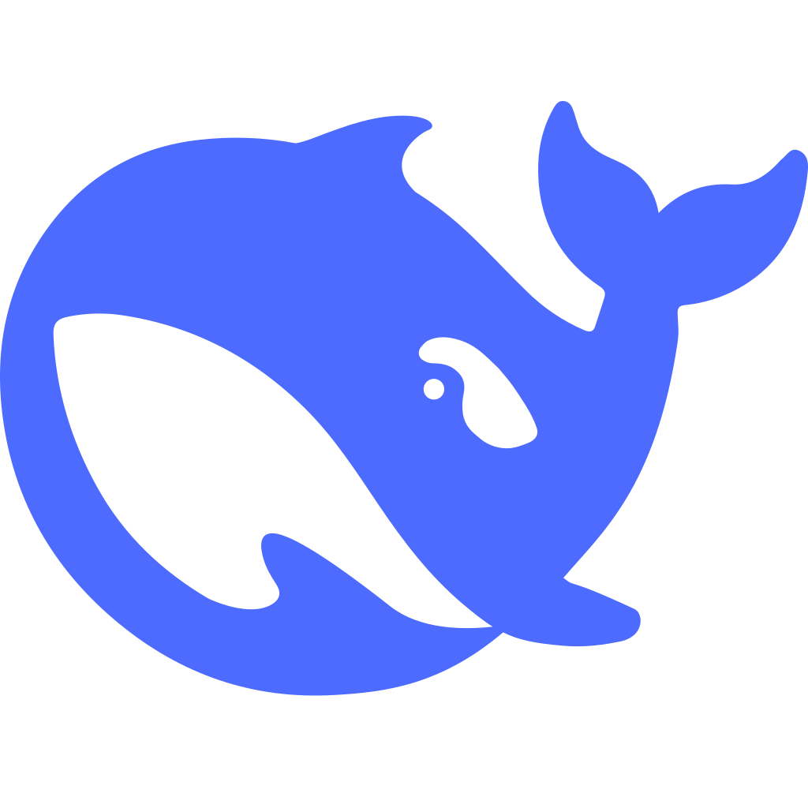

Index
已经写下的
目前只有一篇，后续更新也放这里。
-
在 QQ 里养一条会说话、会唱歌的「鱼」
用 DSH + qq-bridge + SnowLuma 从零搭起，再接 GPT-SoVITS 发语音、ffmpeg 切歌、SenseVoice 听懂语音；含人格卡、记忆、成本、踩坑表和检查清单。
哪里写错了，或者你有更好的做法？ 在群里说一声，或者直接提 Issue；被指出来的问题会改在正文里。

Index
目前只有一篇，后续更新也放这里。
用 DSH + qq-bridge + SnowLuma 从零搭起，再接 GPT-SoVITS 发语音、ffmpeg 切歌、SenseVoice 听懂语音；含人格卡、记忆、成本、踩坑表和检查清单。
哪里写错了，或者你有更好的做法？ 在群里说一声，或者直接提 Issue；被指出来的问题会改在正文里。